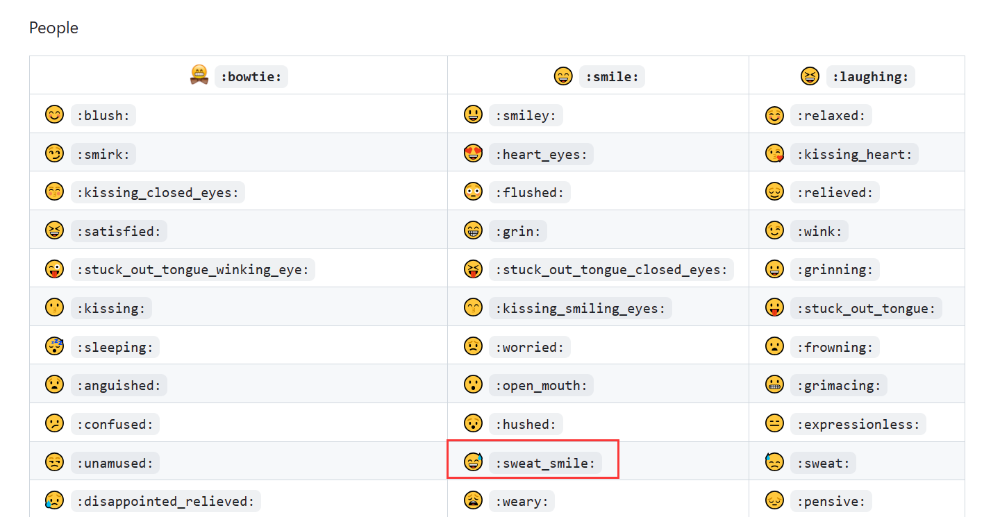
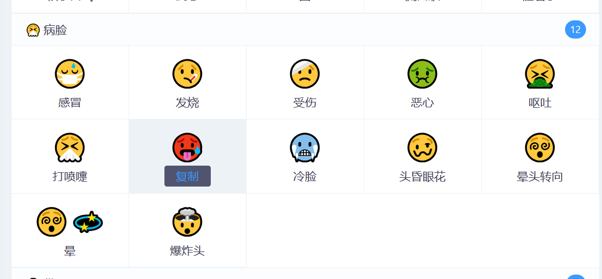
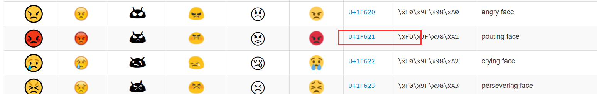

markdown中使用emoji
冲浪的时候怎么能不用 emoji，写文档的时候也是一样的，不过我们不可能每次都去网上粘贴，特别是一些常用的 emoji，怎么快速的打出来还是挺有用的 😡，本文介绍三种方式
第一种方式更简单点，就是在 ^1 中查找你想要的表情包，进入页面后，如下图

比如我选择流汗黄豆，然后在 markdown中输入
:sweat_smile:效果为： 😅
第二种方式参考了 ^2，首先我们需要在 ^3 中找到想要的表情，然后直接复制就好了

选中复制即可，效果为：🥵

然后复制框选中的 Unicode 代码，比如我选的是 U+1F621，复制后，去掉 U+ 然后改为 &#x，末尾添加 ; 再复制到 markdown 中，具体的，复制的内容是
😡效果为：😡
References
本博客所有文章除特别声明外，均采用 CC BY-NC-SA 4.0 许可协议。转载请注明来自 Ruoy's Blog！
评论